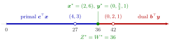

Strong Duality¶
Theorem¶
Theorem (strong duality). Let (P) be the linear program and (D) its dual . There is an optimal solution of (P) if and only if there is an optimal solution of (D). Moreover, their objective values are equal:
Interpretation¶
The best upper bound that nonnegative combinations of the constraints can prove is exact: there is no gap between the largest primal value and the smallest dual value. In the resource-buyer reading of the dual, where is a company's capacity of resource and the price per unit that a buyer offers for it, the buyer can make an offer for all resources that leaves the company indifferent between producing and selling.

The figure uses the linear program of Example 1 below. The objective values of the primal feasible points fill the interval from , at , to (blue). The values of the dual feasible points start at and grow without bound (red), since can be taken as large as one likes. Both ranges end at the same number , attained by and . The open circles are the feasible but non-optimal pair , , with the positive gap .
The hypothesis is the existence of an optimal solution of one of the two linear programs, not mere feasibility. A feasible primal can be unbounded, and then the dual is infeasible by weak duality (Example 3 below). If both linear programs are feasible, however, weak duality bounds the primal objective, a feasible linear program with bounded objective has an optimal solution, and the theorem applies.
A proof via Farkas' lemma shows why the bound closes. If is optimal, the system , has no solution for . The variant of Farkas' lemma then gives with and ; comparing with forces . So is dual feasible with value below . The dual, bounded below by , therefore has an optimal solution, and letting shrink leaves no room between the two optima. The dual of the dual gives the converse.
The dual optimum prices the resources, which connects to the shadow prices of OR Modelling. A common misreading is that for any feasible pair; equality holds only for optimal pairs (Example 1 below). The Simplex method gives a second, short proof by reading off the final tableau; see dual solution from the simplex tableau.
Key Results¶
- (P) has an optimal solution if and only if (D) has one, and then .
- With weak duality: a primal feasible and a dual feasible are both optimal if and only if .
- If (P) and (D) are both feasible, both have optimal solutions with equal values (by weak duality, the fact that a feasible linear program with bounded objective has an optimal solution, and strong duality).
- Proofs: one via the variant of Farkas' lemma and the dual of the dual; another via the final Simplex tableau, from which a dual feasible solution with the same value is read off. Both use that the Simplex algorithm with Bland's rule terminates.
- Economic reading: given an optimal production plan, the buyer can offer prices whose total equals the maximal profit.
Examples¶
1. Equal optimal values. For subject to , , , , the optimum is with . The dual subject to , , has the feasible point with ; equal values, so both are optimal. The resources are priced , and per unit, and the first resource, of which units are left over, is worthless to the buyer. By contrast, the feasible pair , has : away from the optimum the gap is positive.
2. Best bounds from one constraint or from both. For subject to , , , the first constraint alone proves at best and the second alone . The dual subject to , , has optimum with , solving , . The primal optimum is , solving , , with .
3. Feasible is not enough. Consider subject to , , , . The points with are feasible: , , . Their value grows without bound, so (P) has no optimal solution. In standard form the last two constraints read and , and the dual constraints for and are and . For the first gives , and then , so (D) is infeasible. Neither linear program has an optimal solution, and the theorem says nothing about equal values.
Prerequisites¶
Related Concepts¶
- Farkas' Lemma
- Possible Outcomes of a Primal–Dual Pair
- Complementary Slackness (Linear Programming)
- Dual Solution from the Simplex Tableau
- Bland's Rule
- Right-Hand-Side Ranging
- Shadow Price in Linear Programming
Sources¶
- Math VI: Convexity and Optimization · Week 5
- H. E. Nusse and M. Dienstknecht, Math VI: Convexity and Optimization, lecture notes 2026–2027, Section 5.2
Aliases: strong duality theorem, duality theorem of linear programming, zero duality gap Keywords: \boldsymbol{c}^{\top}\boldsymbol{x}^{\ast}=\boldsymbol{b}^{\top}\boldsymbol{y}^{\ast}, Z^{\ast}=W^{\ast}, primal optimal if and only if dual optimal, equal optimal values, resource buyer leaves the company indifferent Symbols: epsilon
Last updated: 10 November 2026 16:43
Strong DualityComplementary Slackness (Linear Programming)Possible Outcomes of a Primal–Dual PairDual Linear ProgramWeak DualityDual of the DualPossible Outcomes of a Linear ProgramFarkas' LemmaDual Solution from the Simplex TableauBland's RuleRight-Hand-Side RangingShadow Price in Linear Programming